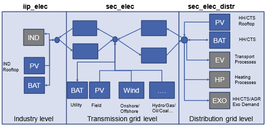

Power sector¶
Naming convention¶
The power sector in the SEDOS dataset is dominated by power generation processes which are mainly classified based on the input commodity for the conversion processes and the conversion type. Besides of combustion processes, which may convert various energy carriers (fossil, biogene or synthetic) of different states (solid, liquid or gaseous) into power and require an additional specification of the main fuel type in the naming convention, the dataset is mainly structured according to processes which are directly associated with a primal energy carrier-based conversion, such as photovoltaics, wind turbines, marine, geothermal and hydro, as well as nuclear power. Further, the dataset includes power storage processes, sink and source processes and flow processes. With a focus on modelling the German energy system within a the single-node approach in SEDOS, a country prefix is added to all foreign power (pow) processes for modelling the European power system. A two-digit country code is added to non-German processes in case of a detailed modelling of the European power sector on a country basis, while a single digit prefix is assigned to country groups, aggregating multiple countries. Only for crossborder power flows, which are modelled as conversion processes between country (or country-group) specific electricity commodities, a prefix defining the from-to power flow relation is added.
For power generation and storage processes, the naming further includes the technology class and the conversion specification as well as the fuel type class, in case of combustion processes. For combustion and geothermal processes, the technology type differentiates between steam turbines (st), gas turbines (gt), combines cycle (cc), organic rankine cycle (orc) and internal combustion (ic) processes. Without further specification an electricity only conversion process, which convert one or multiple fuels to electricity as well as process and fuel related emissions, is assumed. For combined heat and power (chp) processes, producing additionally heat or carbon capture and storage (ccs) processes, which allow for a reduction of greenhouse gas emissions, a specification is added to the naming. For combustion processes, finally the main fuel type is added in the naming convention, allowing a differentiation between primary hydrogen, methane, oil, coal, lignite, biomass, biogas, waste and syngas fueled processes.
Concerning the modelling of renewable power generation processes a specification of the location or the applying sector is added for a further differentiation of the primary energy conversion processes. For wind-turbines this includes a differentiation between onshore (on) and offshore (off) turbines with a further differentiated between floating (fl) and fixed-bed (fb) installations in case of offshore applications. PV is diffentiated in ground-mouted (gm) field (fiel) and rooftop (roof) installations on buildings belonging to the household sector (hh), commercial trande and sevices sector (cts) and industry sector (ind). An analogous differentiation is made for battery (batt) storages, allowing a differentiation between utility (util) application and hh, cts and ind applications. Besides of battery storages, the class of electricity storage also includes hydro storages, which are further differentiated in pure seasonal storages without a pump process and pump-storages (ps). For pump-storages the naming differentiation between open cycle processes, which include a natural inflow and closed cycle processes, without a natural inflow.
For all processes a differentiation between existing installations (0) and expansion options (1) is made. In order to allow a distinction of varying resource classes (e.g., for intermittent renewables) or varying feedstocks (e.g., for different biomass resources) the stock or expansion classification might be further differentiated. This is done by an increasing counter at the process ending, enumerating different existing ([01,..0XX]) or potential [(11,..,1XX]) options.
Table 1: Nomenclature for the power sector process naming¶
| Region | Sector | Mode/Process Type | Technology/Location | Specification | Fuel | Stock/Expansion |
|---|---|---|---|---|---|---|
| [ ],[xx,yy],[a,b] | pow | combustion | gt, st, cc, ic | chp, ccs | methane, hydrogen, oil, coal, lignite, syngas, biomass, biogas, waste | 0, [01…0XX] |
| photovoltaic | fiel | gm | 1, [11---1XX] | |||
| hh, cts, ind roof | ||||||
| wind_turbine | on | |||||
| off | fl, fb | |||||
| nuclear | fis, fus | |||||
| marine | ||||||
| geothermal | orc, st | chp, ccs | ||||
| hydro | ror | |||||
| storage | batt | util, hh, ind, cts | ||||
| hydro | seasonal, ps_ol, ps_cl | |||||
| source | hydro_energy, hydro_nat_inflow_seasonal, hydro_nat_inflow_openloop, lignite, bioenergy, sewage, landfill, waste, cbm | |||||
| sink | exo_sec_elec | |||||
| [xx_yy],[a_b],[a_de] | flow |
Provided parameters¶
The scalar parameters provided are described in Table 2.
| Parameter | Unit | Explanation |
|---|---|---|
| lifetime | a | Technical lifetime of a process. |
| potential_annual_max | GWh | Maximum annual energy use of a commodity. |
| demand_timeseries | - | normalized demand timeseries which gets multiplied with demand_annual |
| demand_annual | GWh | Projected annual demand for a commodity. |
| shared_potential_id | str | Specifies a name for a potential group in which all components share the same potential (e.g. wind turibine) |
| capacity_p_inst_0 | MW | Existing throughput power output capacity per process in a certain year. |
| capacity_p_min | MW | Minimum installable capacity per process. |
| capacity_p_max | MW | Maximum installable capacity per process. |
| capacity_e_inst_0 | MWh | Existing storage energy capacity. |
| capacity_e_min | MWh | Minimum required storage energy capacity. |
| capacity_e_max | MWh | Maximum allowed storage energy capacity. |
| capacity_p_abs_new_max | MW | Absolute upper bound on level of investment in new power output capacity for a period. |
| availability_timeseries_max | - | Time series of maximum capacity factor in relation to installed capacity. |
| cost_inv_p | EUR/MW | Investment costs for new throughput power output capacity. |
| cost_fix_p | - | Operation independent costs for existing and new throughput power output capacity. |
| cost_var_e | EUR/MWh | Variable costs per throughput energy unit output. (excluding fuel costs). |
| conversion_factor_ |
MWh/MWh | Commodity-specific conversion factor (multiplication of input and output factors yields the efficiency of the process). |
| ef_ |
kg/MWh | Commodity-specific emission factor. |
| cb_coefficient | - | The Cb-coefficient (backpressure coefficient) is defined as the maximum power generation capacity in backpressure mode divided by the maximum heat production capacity (including flue gas condensation if applicable). |
| cv_coefficient | - | The Cv-value for an extraction steam turbine is defined as the loss of electricity production, when the heat production is increased one unit at constant fuel input. |
| efficiency_sto_in | percent | Energy efficiency of power input. |
| efficiency_sto_out | percent | Energy efficiency of power output. |
| sto_ep_ratio_binding | MWh/MW | Fixed ratio of the storage energy capacity to its power output capacity. |
| sto_io_ratio_binding | MW/MW | Fixed ratio of the storage power output capacity to its input capacity. |
All costs are presented excluding taxes and subsidies, based on 2021 price levels.
General modeling approach¶
The considered power generation processes are modelled as multi-input/multi-output conversion processes which consume one or more input commodities and produce on or more output commodities. In general, these processes can be categorized into electricity only production (EOP) processes and combined heat and power (CHP) processes. Depending on the fuel and/or technology type, the conversion also leads to emissions, of which CO2, CH4 and N20 are considered in the dataset. In case of a carbon capture and storage specification (CCS) of a conversion process, a fraction of the emitted CO2 emissions is balanced as a negative emission commodity. Besides of power generation processes, the dataset includes the parametrization of electricity storage processes, electricity sink and source processes and processes for modeling the electricity flow between different applications (sectors/ voltage levels) and between different countries within a single-node approach. In this context, electricity flows between countries and between different application areas are modelled in a single node approach by defining additional conversion processes that enable country-specific or application-specific flows of energy carriers and emissions, as well as their conversion processes, to be balanced. The conversion processes in the electricity sector are thus defined for each country and application field (industrial process or non-industrial conversion at distribution or transport network level) separately with the corresponding specific input and output commodities. Conversion across national borders and application levels is represented by auxiliary processes, which can be parameterized with corresponding losses, expenses, inventory capacities, and investment options
Aggregation of the European power generation stock and expansion options¶
The aggregation of processes is technology- and country-specific. For wind and PV technologies, existing profiles are consolidated into a single profile of the remaining stock in each modelled year. This implicitly takes into account the technology and regional distribution changes of the existing stock within a country, resulting in varying profiles of the remaining stock in different model periods. For expansion options, the potential generation is aggregated into nine classes according to project status (repowering, planned, expected, greenfield) and LCOE. It is assumed that a replacement investment (repowering) will take place at the end of the technical service life, whereby the optimal wind turbine will be placed on the existing site, taking into account distance restrictions and shadowing effects (wind ellipse). Planned projects are based on literature research (e.g., GEM). In order to better estimate future capacities and profiles, the remaining potential on open land (greenfield), which is clustered according to LCOE (levelized cost of electricity), is reduced by the expected additional capacity according to a reference scenario. PV processes are additionally differentiated according to sectoral application (e.g., residential roofs, commercial roofs, open space) and building typology, while wind turbines are only differentiated between onshore and offshore (floating or fixed-bed) technologies.
In the field of combustion technologies, the challenge lies in the meaningful aggregation of the large number of existing plants. Here, processes are classified according to fuel type, technology type, and other specifics (e.g., CHP, CCS). By differentiating according to technology class and the unique combinations of input variables (fuels) and output variables (electricity, heat, emissions, etc.), the tradeoff between accuracy and a reduced number of processes is balanced as much as possible. Thus, the parameters correspond to a capacity-weighted average, as plants of different types and ages are aggregated within a country. This results in weighted averaged efficiencies of the conventional generation stock of a country of the same technology and fuel class. In consequence the merit order of existing powerplants is less accurate and a clean modelling of between different CHP characteristics, such as a clean differentiation between back-pressure and steam-extraction turbines, is not possible, as back-pressure (cb) coefficients and power loss factors (cv) are averaged. For expansion options of combustion technologies, potential local characteristics, such as varying fuel cost or availability restrictions within a country are ignored and power plant type specific investment options from the literature are taken
Modelling of power flows¶
Network restrictions are mapped in the simplified single-node approach by
assigning all power conversion processes to national nodes and application
fields. This allows energy flows between countries and between different levels
(e.g., industry, distribution network, transport network) to be mapped via
additional conversion processes. The TYNDP 2024 serves as the basis for
determining the existing transfer capacity and possible expansion options. Since
country-specific modeling of the electricity sector can be computationally
challenging depending on the application, SEDOS also offers the option of
aggregating national electricity conversion processes in Europe at the level of
country groups. This involves defining seven country groups, each of which is
linked to each other and to Germany via aggregated exchange processes and which
approximate the structure of the European foreign sector from Germany's
perspective:
- Aggregation option for countries:
A (AT, CH, HR, IT, SI)
B (FR, ES, PT)
C (BE, LU, NL)
D (DK, EE, FI, LT, LV, NO, SE)
E (CZ, HU, PL, SK)
F (AL, BA, BG, GR, ME, MK, RO, RS)
G (UK, IE, CY, IS, MT)
The modelling of power flows between different levels of the network within a country is illustrated in the following figure:

Figure 1: Assignment of power generation and consumption processes to different grid levels.
In this case, all large thermal power plants and all electricity generators and consumers that are not explicitly assigned to a sector (industry, households, commercial, transport, or heating) are assumed to be connected to the transmission grid. On the other hand, there are industrial consumers and industry owned generators, which produce and consume an industry specific electricity commodity (iip_elec). Similarly, all decentralized consumers (households, commercial, transport, heat), generators, and storage facilities are modelled. This means that these processes convert a distribution network specific electricity commodity (sec_elec_distr) which allows to represent the feed-in or load on distribution grid level. By introducing auxiliary conversion processes between the dedicated electricity commodity of industrial and decentral processes and the general electricity commodity on transmission grid level, a balancing of power flows within a country is possible.